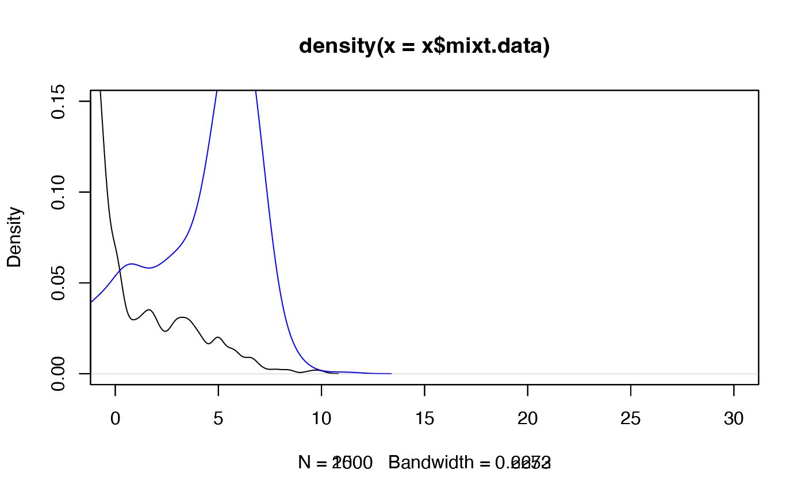

Estimates the covariance matrix of the gaussian vector (IBM)
Source:R/IBM_estimVarCov_gaussVect.R
IBM_estimVarCov_gaussVect.RdNonparametric estimation of the covariance matrix of the gaussian vector at point 'z', considering the use of Inversion - Best Matching (IBM) method to estimate the model parameters in two-sample admixture models. Recall that the two admixture models have respective probability density functions (pdf) l1 and l2, such that: l1 = p1*f1 + (1-p1)g1 and l2 = p2f2 + (1-p2)*g2, where g1 and g2 are the known component densities. Further information for the IBM approach are given in 'Details' below.
Arguments
- x
Time point at which the 1st (related to the 1st parameter) underlying empirical process is looked through.
- y
Time point at which the 2nd (related to the 2nd parameter) underlying empirical process is looked through.
- IBMestim.obj
An object of class 'estim_IBM'.
- samples
(List) List of the two considered samples.
- admixMod
(List) List of objects of class 'admix_model', one for each sample.
Value
The estimated variance-covariance matrix of the gaussian vector Z = (hat(p1),(hat(p2),Dn(z)), at location '(x,y)'.
References
Milhaud X, Pommeret D, Salhi Y, Vandekerkhove P (2024). “Two-sample contamination model test.” Bernoulli, 30(1), 170--197. doi:10.3150/23-BEJ1593 .
Author
Xavier Milhaud xavier.milhaud.research@gmail.com
Examples
# \donttest{
## Simulate mixture data:
mixt1 <- twoComp_mixt(n = 2000, weight = 0.2,
comp.dist = list("norm", "norm"),
comp.param = list(list("mean" = 2, "sd" = 3),
list("mean" = -2, "sd" = 1)))
plot(mixt1, xlim = c(0,30), ylim = c(0,0.15))
data1 <- getmixtData(mixt1)
mixt2 <- twoComp_mixt(n = 1500, weight = 0.5,
comp.dist = list("norm", "norm"),
comp.param = list(list("mean" = 2, "sd" = 3),
list("mean" = 6, "sd" = 1)))
plot(mixt2, add.plot = TRUE, xlim = c(0,30), ylim = c(0,0.15), col = "blue")

data2 <- getmixtData(mixt2)
## Define the admixture models:
admixMod1 <- admix_model(knownComp_dist = mixt1$comp.dist[[2]],
knownComp_param = mixt1$comp.param[[2]])
admixMod2 <- admix_model(knownComp_dist = mixt2$comp.dist[[2]],
knownComp_param = mixt2$comp.param[[2]])
## Estimate the mixture weights of the two admixture models (provide only hat(theta)_n):
est <- estim_IBM(samples = list(data1,data2),
admixMod = list(admixMod1,admixMod2), n.integ = 1000)
IBM_estimVarCov_gaussVect(x = mean(data1), y = mean(data2), IBMestim.obj = est,
samples=list(data1,data2), admixMod = list(admixMod1,admixMod2))
#> [,1] [,2] [,3]
#> [1,] 0.23804429 -0.08918515 0.3249567
#> [2,] -0.08918515 0.83352761 0.9698594
#> [3,] -0.40440074 2.27141493 2.5230708
# }